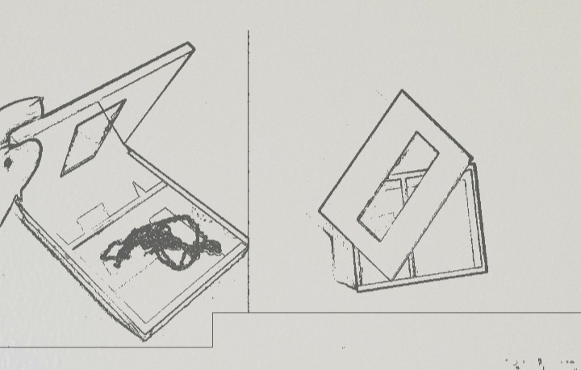

This project is formed by two individual parts and one group one.
FIRST PART
The topic of the first part is about designing a parametric, press-fit model of building blocks for laser cutting.
In the first part of the project, I have been using Inkscape to produce a cutting surface 100x50cm, maximun size, and getting a Sticker from that. The following image is showing the operation done.

SECOND PART
In the second part of the project, I designed a parametric model and produced it. Below all the steps documenting the process.
DISCUSSION ABOUT IDEATION PROCESS AND FLOW CHART OF THE IDEA DEVELOPED.
The ideation process began with what idea to produce,the outcome was a box for small objects for example jewellery. I decided to produce a small model of a box with a lid made partially with glass. The box has inside a panel to create different compartments for small objects. I had to decide how to organise my work so I drew, with a drawing application on my phone a small example to reproduce. Here the example I used as a sample.

I used Autodesk Fusion 360 to design a parametric, press-fit Jewellery box model and getting it ready for laser cutting. I followed various steps to produce my object.
I started preparing the model and decided the parameters to design my Jewellery box size.


Here the link to my Fusion 360 project.
A video showing how I designed the model. I progetted fingers (joint points) around the base panel and on the box laterals and, after that, (this is not visible in the video) I added fingers on the lateral panels to make sure the panel inside the box is well designed and stable. The internal component, I added inside the box, is designed to make the Jewelllery box more organised, practical and ergonomic so that it's possible to organize small objects inside the box.
To be able to reproduce my box puzzle, I prepared it in Autodesk Fusion 360, ready for laser cutting. Here you can see how I layed the single components to be able to open the file in Inkskape and laser cutting the components of my box after that.

Here you can see the file uploaded in Inkscape.

Below, just a pic of the laser cutting process, a thermal process in which a focused laser beam is used to melt material in a localised area. A co-axial gas jet is used to eject the molten material and create a kerf. A continuous cut is produced by moving the laser beam or workpiece under CNC control (Computer numerical control).

At this point, my Jewellery box was ready and this is a collage where I'm showing the final result.

CONCLUSIONS, CHALLENGES AND RESOLUTIONS.
I had problems with realising lateral fingers in the lateral panels to be able to fit properly the internal panel inside the box. After some attempts I figured out how to add them in Autodesk fusion. After sketching them, I extruded and pushed the bottom “Modify and Combine.” A menu will appear on the screen and you will be prompted to select a Target body and Tool body as well as the type of operation. It’s possible to choose between Join, Cut, or Intersect. Once I had Target and Tool bodies selected, I choose to Cut and hit OK to complete the operation. In this way the internal panel was perfectly fitting inside the box. I had fun working with this project and I spent time understanding how to use Autodesk fusion 360 properly so that my project was ok for laser cutting. Folllowing a video that helped me during the process.
An helpful video that guided me, taken from youtube.
THIRD PART (GROUP PROJECT)
The last part of the project is a group one. Me with my colleague Halldór have been calculating the Kerf of the laser. The laser burns away a portion of material when it cuts through and it's important to be aware of that in the phase object production
Here I'm showing the Kerf calculation process. We arried at the conclusion that subtracting 9,94cm to 10,04 cm, we get our Kerf that will be 0,1 cm so 1 mm. This is fine as it's known that the laser kerf ranges from 0.08mm – 1mm . Here an image of the process.